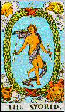
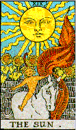
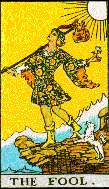
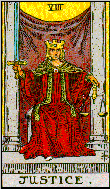
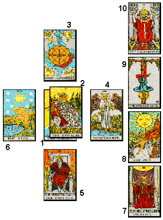

Aqui estão representados dois métodos de consulta ao Tarot: as três cartas (o mais simples) e A Cruz Celta (o mais clássico).
Comece a jogar o Tarot da maneira mais simples, enquanto aprende o significado das cartas e fortalece seu elo com elas.
Faça uma pergunta simples que possa ser respondida com “SIM” ou “NÃO” e tire três cartas. Em seguida, some os números das cartas, reduzindo-os a um número ente 1 e 22. O número encontrado é referente ao Arcano que lhe responderá como “SIM” ou “NÃO” (veja tabela após o exemplo). Neste método, tome “O Louco” como número 22.
Exemplo



Somando as cartas temos: 21 + 19 + 22 = 62 = 6 + 2 = 8

A Justiça responde como “SIM”.
.
Veja a seguinte tabela
.
| Arcano | Figura | Responde como |
|---|---|---|
| 1 | O Mago | Sim |
| 2 | A Papisa | Sim |
| 3 | A Imperatriz | Sim |
| 4 | O Imperador | Sim |
| 5 | O Papa | Sim |
| 6 | Os Amantes | Dúvida, tire outra |
| 7 | O Carro | Sim |
| 8 | A Justiça | Sim |
| 9 | O Ermitão | Sim |
| 10 | A Roda da Fortuna | Sim |
| 11 | A Força | Sim |
| 12 | O Enforcado | Não |
| 13 | A Morte | Não |
| 14 | A Temperança | Sim |
| 15 | O Diabo | Não |
| 16 | A Torre | Não |
| 17 | A Estrela | Sim |
| 18 | A Lua | Não |
| 19 | O Sol | Sim |
| 20 | O Julgamento | Dúvida, tire outra |
| 21 | O Mundo | Sim |
| “22” | O Louco | Sim |

O método mais usado para a leitura do Tarot é a Cruz Celta.
Enquanto mentaliza a pergunta, o consulente deve embaralhar bem as cartas, arrumar o maço e cortá-lo com a mão direita. A partir desse momento, ele não deve mais mexer com o baralho. Ao leitor compete agora juntar os dois montes separados e começar a pôr as cartas - as dez primeiras que ficaram por cima do maço - e que devem ser colocadas, viradas para baixo, de acordo com o seguinte diagrama (onde já aparecem viradas):

Nessa arrumação, cada uma das posições,
ou casas, tem seu valor específico, abrangendo os diferentes aspectos
que envolvem a consulta.
CASA 1 - A situação
presente
Indica a atmosfera física e espiritual
que envolve o consulente nesse momento. Também pode representar
a pessoa (ou as pessoas) sobre a qual o consulente pergunta.
CASA 2 - A influência
imediata
Esta carta corta a anterior, significando
assim os obstáculos imediatos, as situações ou pessoas
que estão afetando diretamente a vida do consulente. Em geral, indica
a natureza real do problema que motivou a consulta.
CASA 3 - O consulente
perante o problema
Mostra como o consulente se coloca frente
ao problema, ou seja, como sente e reage à situação
na qual está envolvido.
CASA 4 - As determinações
do passado
Assinala os acontecimentos, as pessoas
e as emoções do passado que resultaram diretamente na atual
situação.
CASA 5 - O que
o consulente desconhece
Indica aqueles aspectos relacionados
com a situação ou com o problema que o consulente ignora.
Há casos em que esta carta revela elementos muito importantes, cujo
desconhecimento impede o consulente de chegar a uma solução
favorável do conflito.
CASA 6 - As influências
do futuro
Antecipa quais são os fatores
que vão se manifestar no futuro próximo e que, inevitavelmente,
terão influência na situação.
CASA 7 - O consulente
Representa o consulente: sua personalidade,
sua estrutura emocional, seus traços de caráter e seus sentimentos.
CASA 8 - Fatores
ambientais
Mostra os diversos aspectos externos
e as pessoas que estão diretamente relacionadas com a situação
do consulente. De certa maneira, esta carta esclarece ou confirma a da
CASA 1.
CASA 9 - O caminho
do destino
A carta que aparece nesta casa é
muito importante para a leitura, pois ela indica o caminho a ser seguido
para alcançar o sucesso. Às vezes, ela pode indicar mais
de uma via.
CASA 10 - Resultado
final
Mostra a culminação de
todo o processo, quais serão os resultados e o desfecho da situação.